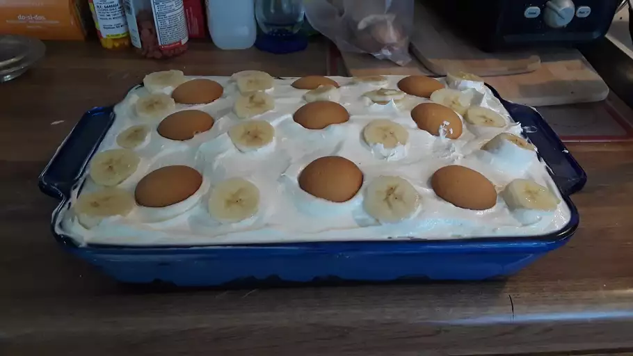

Waffers In The Sand

Ingredients
- 1 ½ cups graham cracker crumbs
- 3 tablespoons white sugar
- ½ cup butter, melted
- 1 (8 ounce) package cream cheese, softened
- 1 cup white sugar
- 2 teaspoons vanilla extract
- ½ teaspoon lemon juice
- ¼ teaspoon salt
- 1 (8 ounce) tub frozen whipped topping, thawed
- 3 cups frozen blueberries
Directions
- In large bowl, combine sweetened condensed milk and water. Add pudding mix; beat until well blended. Chill 5 minutes.
- Fold in whipped cream. Spoon 1 cup pudding mixture into 2 1/2-quart glass serving bowl.
- Top with one-third each of the vanilla wafers, bananas and remaining pudding. Repeat layering twice, ending with pudding mixture. Chill thoroughly. Garnish as desired. Store leftovers covered in refrigerator
home